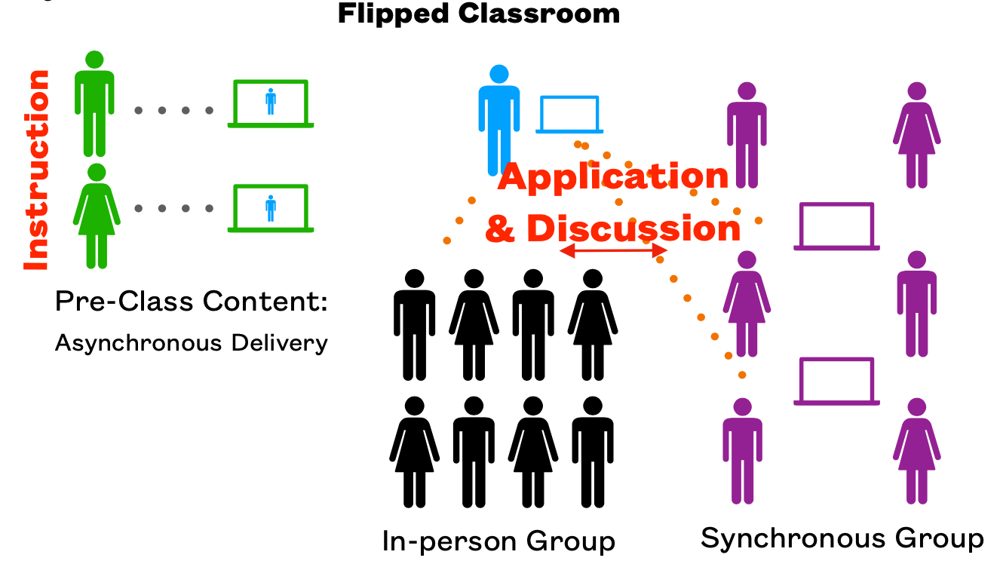

David A. Sykes, Ph.D.
TR 9:30-10:50 A.M. in Olin 103
MWF 1:30-3:30 P.M.
TR 8:30-9:20 A.M., 2:30-3:30 P.M.
Or by appointment or happenstance.
An introduction to computer organization and principles of computer design. Topics include digital logic and digital systems, machine level representation of data, instruction sets, CPU implementation, memory system organization, I/O and communication, and assembly language programming. Prerequisite: "C" or better in Computer Science 235.
We will study digital logic, Von Neumann architecture, data representations, the fetch/execute cycle, instruction formats and addressing, machine and assembly language, memory structure, interrupts, and input/output.
By the end of the course, you should be able to answer these questions:
By the end of this course, you should be able to:
We will use two textbooks:
We will use these websites this semester:
Moodle. You will submit some project files in Moodle. Your scores for graded work (quizzes and projects) will be recorded in the Moodle gradebook, too.
Coursera makes available two courses for free that are based directly on the textbook:
I have watched these videos and they were very interesting and informative. They follow the chapters in the book but sometimes include a few additional topics.
We will use The Nand2Tetris Software Suite. You should download and install it on your personal computer. Note: You will need to install Java on your computer to run these tools.
Your grade for the course will be based on a weighted average of scores for homework, exams, projects, and a final exam. The usual grading scale applies: 93–100: A, 90–92: A-, 87–89: B+, 83–86: B, 80–82: B-, 77–79: C+, 73–76: C, 70–72: C-, 60–69: D, 0–59: F.
A final average will be calculated using two methods using weightings shown in the table. The higher of the two values will be mapped to a letter grade. Under Method #2, neither homework scores nor exam scores factor into the calculation.
| Component | Weight | |
|---|---|---|
| Method #1 | Method #2 | |
| Homework | 25% | 0% |
| Projects | 30% | 30% |
| Exams | 30% | 0% |
| Final exam | 15% | 70% |
| TOTAL | 100% | 100% |
Homework assignments help you to prepare for class. Homework will usually consist of some reading in one of the textbooks and some exercises (completed in Mimir). Homework is due before the start of the class for which it was assigned.
Homework is graded. Partial credit will seldom be awarded for incorrect answers to homework problems. If you are struggling with a homework problem, post a question about it at Piazza. You are allowed to use any resources you find useful for completing homework assignments, including consulting other students in the class.
Homework assignments will be posted in Piazza with a folder (tag) of homework.
You will take two exams. The first will cover up through sequential logic (week of October 5). The second will cover up through machine language and computer architecture (week of October 26).
All exams will be given online, usually within a week after we finish covering the topics the exam will cover. You may use your notes, but you may not use any other resources, including web resources and assistance from other people. Exams will be timed. You may select your start time, but you must complete the exam in the time allotted.
Projects play a central role in this course and comprise 30% of your final grade. It is important to complete each project successfully and on time.
The objective of the final exam is to assess how well you reached the objectives for the course. Partial credit will be awarded for incorrect answers.
You may use the textbooks and your notes from this class while taking the final exam. You may not use any other resources, including other people.
This class will run in accordance with a Blended Synchronous (Flipped Classroom). You will be expected to prepare for a class meeting by performing a variety of tasks, including:

You will be in one of three groups: A, B, or C. Groups A and B will attend class in-person one day a week and attend class remotely one day a week. Students in Group C will work fully remotely. Students in all groups should work synchronously unless there are extenuating circumstances.
During class meetings, in-person and remote students will work together in small teams to solve problems. That way in-person students can grab my attention to address issues.
Social distancing allows only half of the students to be in our classroom at one time. The first day of class will be completely remote. On the first day we will determine whether you are in Group A or Group B. Group C has already been set up. Some of you might join Group C temporarily if necessary. Note: I might revise group assignments during the semester.
Students in Group A will attend “in person” each Thursday and attend remotely each Tuesday. Students in Group B will attend “in person” each Tuesday and attend remotely each Thursday. The class on November 19, the last Thursday before Thanksgiving break, will be 100% remote.
We will use Zoom to support remote access. The links for class meetings and for office hours will be available in Piazza and Moodle. Portions of every class meeting will be recorded and made available online. The videos for a class meeting will be available in a Piazza post for that class.
Wearing a mask covering nose and mouth in the classroom is mandatory. A facemask is not a substitute for social distancing. Do not modify the seating arrangement in the classroom.
Please evaluate your own health regularly. Do not attend class or other on-campus events if you are not feeing well. Seek appropriate medical attention for treatment of illness. A doctor's note concerning absences is not required.
You are expected to attend class sessions either in-person or remotely. The General Policy Regarding Attendance in the Wofford College Student Handbook makes you responsible for catching up on missed classes.
Class participation and active learning are important aspects of this class, so your engagement is critical to your success. However, I understand that sometimes you must miss examinations or other academic obligations affecting your grades because of illness, personal crises, and other emergencies. As long as such absences are not excessive (beyond two weeks of classes), I will work with you as best I can to help you succeed in the course. Contact me as soon as possible when such absences arise so we can make arrangements to get you caught up. This policy will not apply in the case on non-emergency absences.
If you will miss class on an “in person” day,
please post without any details (anonymously if you prefer) a follow-up
message to my Piazza post about the class
and tag your post with
open-seat so that a student in the
other group can occupy your seat in the classroom.
If you are in the other group and would like that seat
then be the first to post in Piazza a claim for it.
If you will miss a class on a “remote” day, then let me know as soon as you can.
The final exam period is scheduled for 9:00-noon on Wednesday, December 9, 2020. You will take the final exam online in Mimir. You must complete the exam in the time allotted.
When attending class in person or remotely, you should dedicate your full attention to class activities. When attending in person, take notes and keep your laptop and other devices put away until we need them. When attending remotely, keep your video on and take notes. Give a holler if you have a question.
You must meet project deadlines. To submit a project late, you must contact me at least a day before the deadline to get an extension. Let me know how much more time you need. I will still expect you to submit the work you have completed so far even if you receive an extension.
Note: Any code you submit that contains syntax errors will receive a score of zero.
Post questions and comments about this course at Piazza. Feel free to respond to a question or to edit a response to a question. We are all learning together.
All questions about the course, including about projects, must be posted at the Piazza Q&A page. If you send me a question via email or via private post that should be posted publicly at Piazza, my reply will direct you to post your question publicly.
Do not post working code at Piazza. Do not include in a response either “fixed” code or a detailed description of how to change code to get it to work. It is okay to post non-working code.
I usually respond to email messages sent Sunday through Thursday within 24 hours—longer when sent on a Friday or a Saturday. I usually respond much sooner to Piazza posts since I have the Piazza app on my phone and receive notifications.
You can send me email messages for private matters, such as letting me know you will be absent or that you'd like to schedule a meeting. However, I prefer that you post a private message via Piazza.
Note: Anonymous Piazza posts are anonymous to classmates but not to me.
The Honor Code requires faculty, staff, and students to maintain a high standard of individual honor and integrity. Work represented as your own must be your own.
I encourage you to collaborate with others in the class—that is, help or get help from others. However, you may not write code for another student or provide code to copy. Doing any of these things is a violation Honor Code.
What is the distinction between collaboration and cheating?
During collaboration,
Ultimately, you must implement a solution to the problem yourself.
For some projects, you might be allowed to work with other students in the class. In this case, you are allowed to share all your work with your teammates. However, you are expected to do all of the work together. One student should not work without the others contributing.
Don’t cheat because you are up against a deadline. Start each assignment as soon as it is given. If you run into a glitch:
If you need accommodations, go to the Student tab in myWofford and investigate the Request Accommodations channel. I’ll make every effort to work with you.
We will work our way through the first thirteen chapters of Code: and then start Chapter 1 of The Elements of Computer Systems: Building a Modern Computer from First Principles. We will then alternate between chapters of CODE and N2T. I will count on you to complete assigned readings and exercises before class starts. I will address any questions about the readings during the first part of a class meeting and then we will work on problems that involve what you've read.
The schedule is subject to change.
Abbreviations:
| Week | Book: Chapter(s) | Topics |
|---|---|---|
| 31 AUG | CODE: Chapters One–Four. |
|
| 07 SEP | CODE: Chapters Five–Eight. |
|
| 14 SEP | CODE: Chapters Nine–Eleven. |
|
| 21 SEP | CODE: Chapters Twelve and Thirteen |
|
| 28 SEP | N2T: Chapters 1 and 2. |
|
| 05 OCT | N2T: Chapters 2 and 3. |
|
| 12 OCT | CODE: Chapters Fourteen–Seventeen. |
|
| 19 OCT | CODE: Chapters Eighteen and Nineteen. |
|
| 26 OCT | N2T: Chapters 4 and 5. |
|
| 02 NOV | CODE: Chapters Twenty–Twenty-Two |
|
| 09 NOV | CODE: Chapters Twenty-Three and Twenty-Four |
|
| 16 NOV | x86: ISA and Assembly Language | |
| 23 NOV | Thanksgiving break | |
| 30 NOV | x86: Calling conventions | |
| 07 DEC | Final exam: Wednesday, December 9, 09:00-noon | |